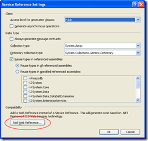
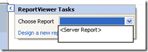
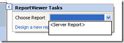

|
|
August 3rd, 2010

Download the project from Codeplex.
Correspondence is a library for building occasionally connected client applications. In other words, an app that can tolerate being off line. These have typically been hard to write. Correspondence makes it easier. It gives you the following features:
- Client-side storage
- Server-side storage
- Client-server communication
- Client-to-client collaboration
And because it’s based on Update Controls, you also get:
- Automatic dependency management
- UI update notification
- MVVM support
So imagine that you and a friend are using the same application. They make a change. Your UI is updated. That’s what Correspondence does.
The Factual modeling language
To get all of these features, you have to model your data differently. You declare your model using a language called Factual. Here’s a snippet of Factual describing players and moves in a Reversi game:
fact Player {
pivot User user;
pivot Game game;
int index;
Move* moves {
Move m : m.player = this
}
bool isActive {
not exists Outcome o : o.game = this.game
}
}
fact Move {
Player player;
int index;
int square;
}
The model is neither relational, nor object oriented. It is historical. It defines historical facts. These facts have fields, relationships, queries, and predicates. All of that is defined in the model so that Correspondence can generate the storage and communications for you.
The development tools
When you get the Correspondence bits, you will pull down two installs. The first is for your development machine. It installs:
- The library assemblies
- The Factual compiler
- Project templates
Once you install this component, you’ll want to go into Visual Studio and hit “File”, “New”, “Visual C#”, “Correspondence”, “Correspondence Model”. This will create a project that references the right assemblies, and has a T4 template that runs the Factual compiler. Using the other project templates, you can create view models, unit tests, and WPF applications that use that model.
SyncExpress
The second install is for your server. It installs a Windows service called “Correspondence SyncExpress”. It runs on http://localhost:9119/SyncExpress. Point your clients at that service and they will synchronize.
SyncExpress is licensed for development and test environments. It is not intended for production. I’m working on some production-ready options for you. For now, just use it to experiment with Correspondence.
Examples
If you download the source from Codeplex, you will find a Reversi game. Edit the app.config to point the client at your installation of SyncExpress, and you can play a game with a friend.
I am also writing lessons on the Codeplex site taking you step-by-step through building your own Correspondence application. Eventually, I will record screen cast videos of that content.
Please download the bits and follow along with the lessons. I think you’ll find that creating occasionally connected clients has gotten much easier.
Posted in Correspondence | No Comments »
July 30th, 2010
I’m on a continuing quest to deliver SSRS reports through a public-facing web application. My user can authenticate, and I can forward their credentials to Report Server. Now I need a branded menu of reports.
Generate a proxy
We’re going to get the list of reports from the Report Server SOAP API. So first, generate a proxy to call this API. The API is an old-fashioned asmx web service, so you can’t use WCF. Instead, we have to generate a web reference.
Create a new class library called “SQLServerReportingServices”. Right-click and select “Add Service Reference…”. Hit the “Advanced..” button, and then hit the “Add Web Reference” button.
Enter the URL of your report service, followed by “ReportService2010.asmx?wsdl”. You can get this URL by opening Reporting Services Configuration Manager and clicking Web Service URL. I entered “http://dit3074lt2:8080/ReportServer_SQL2008R2/ReportService2010.asmx?wsdl”. Click “Go”.
Enter a meaningful web reference name, like “ReportServer”. This is appended to the class library name to give the namespace of the proxy. So the proxy class is “SQLServerReportingServices.ReportServer.ReportingService2010”. Redundant, I know.
Experiment with the proxy
Now create a new unit test project. Not because calling an external system like SSRS is a good unit test, but because it’s more convenient than experimenting in a web project. Add a reference to the SQLServerReportingServices class library that you just created. Also, copy the app.config file from SQLServerReportingServices . Finally, add a reference to “System.Web.Services”. Now we can experiment.
Let’s begin by calling the ListChildren method. This method gives you a list of CatalogItem objects in a report folder. CatalogItem’s properties give you information about each item, including a Path that you can use in another call to ListChildren. You’re actual number of items will vary, but you should get back an array.
[TestClass]
public class ReportNavigationTest
{
public TestContext TestContext { get; set; }
private ReportingService2010 _client;
[TestInitialize]
public void Initialize()
{
_client = new ReportingService2010();
_client.Credentials = CredentialCache.DefaultCredentials;
}
[TestCleanup]
public void Cleanup()
{
_client.Dispose();
}
[TestMethod]
public void GetTopLevelItems()
{
CatalogItem[] children = _client.ListChildren("/", false);
Assert.AreEqual(6, children.Length);
}
}
If you get the exception “The request failed with HTTP status 401: Unauthorized”, be sure to initialize Credentials. Since you are running the unit test under your own account, the default credentials will be your own. Within the web application, we’ll need to forward the credentials of the logged-in user just like we did in the last post.
After experimenting in the unit test for a bit, we can move to the actual web application.
Walk the folder structure
In a modern web application, user’s don’t want to click on a folder and wait for a postback to show its contents. If the folder structure is not too deep or too populated, we can display the entire contents on one page. If it is a bit much for one page, then users expect drop-down menus. In either scenario, we need to get the entire folder structure from a single call.
Fortunately, the reporting service lets us get all of the items in one call. Unfortunately, it returns these as a flat array. We have to render it as the folder structure that it truly is. To help with that, we’ll transform the array into a set of classes. See the Composite pattern in your handy Gang of Four book.
public abstract class Item
{
private string _name;
public Item(string name)
{
_name = name;
}
public string Name
{
get { return _name; }
}
public abstract void Update();
}
public class Folder : Item
{
private List<Item> _items = new List<Item>();
private bool _containsAnyReport;
public Folder(string name)
: base(name)
{
}
public void AddItem(Item item)
{
_items.Add(item);
}
public override void Update()
{
// Recursively update the items.
foreach (Item item in _items)
item.Update();
// This folder contains a report if any of its items is a report,
// or if any of its sub folders contain a report.
_containsAnyReport =
_items
.OfType<Report>()
.Any() ||
_items
.OfType<Folder>()
.Any(folder => folder.ContainsAnyReport);
}
public bool ContainsAnyReport
{
get { return _containsAnyReport; }
}
public IEnumerable<Item> Items
{
get { return _items; }
}
}
public class Report : Item
{
private string _path;
public Report(string name, string path)
: base(name)
{
_path = path;
}
public override void Update()
{
}
}
The Update method walks the structure and updates the ContainsAnyReport property. We can later use this property while rendering the HTML. If the folder does not contain any report, we don’t need to render it. This will hide any folders that the admin created just for data sources or some other resource.
Next we need to turn the flat array into a hierarchy. For this, we use a stack.
CatalogItem[] children = _client.ListChildren("/", true);
// Keep the current folders on a stack.
Folder root = new Folder("");
Stack<Folder> folderStack = new Stack<Folder>();
folderStack.Push(root);
// Convert the flat array into a folder structure.
string currentPath = "/";
Array.Sort(children, (a, b) => a.Path.CompareTo(b.Path));
foreach (CatalogItem item in children)
{
// Get the path up to and including the final slash.
string parentPath = item.Path.Substring(0, item.Path.LastIndexOf("/") + 1);
while (parentPath != currentPath)
{
// Unwind the stack to get back to the parent folder.
folderStack.Pop();
currentPath = currentPath.Substring(0, currentPath.LastIndexOf("/", currentPath.Length - 2) + 1);
}
if (item.TypeName == "Folder")
{
// Push the new folder to the stack.
Folder folder = new Folder(item.Name);
folderStack.Peek().AddItem(folder);
folderStack.Push(folder);
currentPath = item.Path + "/";
}
else if (item.TypeName == "Report")
{
// Add the report to the current folder.
folderStack.Peek().AddItem(new Report(item.Name, item.Path));
}
}
// Figure out which folders contain reports.
root.Update();
We have to sort the array by the path to ensure that everything in a folder is clumped together. Then we add folders and reports to the current folder. If the path deviates, we pop the stack until we get back on track.
Now you can recursively walk the folder structure to output <div> tags or <ul> lists. That’s an exercise left to the reader, since it will depend upon how you want to render your menu.
Next steps
As it turns out, we have some applications that don’t authenticate against Active Directory. We would like to use SSRS for those applications as well. For that, we will have to set up a shadow user, which has access to SSRS. Our next step is to implement authentication and authorization for a logged-in user, even though the application accesses SSRS via the shadow user.
Posted in Reports | 6 Comments »
July 27th, 2010
I am on a quest to deliver SSRS reports within a web application. So far we have authenticated against Active Directory using Forms Auth. Now we need to embed a report in our app. Then, we’ll need to forward the logged-on user’s AD credentials to the report server so he can access the report.
   
For now, I’m just going to add a report to Default.aspx. Later on, we’ll provide a menu to navigate the user’s reports. First, drag a “MicrosoftreportViewer” control from the Toolbox onto the designer. Then, click the task button, open “Choose Report”, and select “<Server Report>”. Fill in your Report Server URL, which you can get by launching “Reporting Services Configuration Manager” and selecting the Web Service URL. Enter the path to the report that you created earlier. Your page source should look like this.
<%@ Page Language="C#" AutoEventWireup="true" CodeBehind="Default.aspx.cs" Inherits="WebApplication1._Default" %>
<%@ Register assembly="Microsoft.ReportViewer.WebForms, Version=9.0.0.0, Culture=neutral, PublicKeyToken=b03f5f7f11d50a3a" namespace="Microsoft.Reporting.WebForms" tagprefix="rsweb" %>
<!DOCTYPE html PUBLIC "-//W3C//DTD XHTML 1.0 Transitional//EN" "http://www.w3.org/TR/xhtml1/DTD/xhtml1-transitional.dtd">
<html xmlns="http://www.w3.org/1999/xhtml" >
<head runat="server">
<title></title>
</head>
<body>
<form id="form1" runat="server">
<div>
<rsweb:ReportViewer ID="ReportViewer1" runat="server" Font-Names="Verdana"
Font-Size="8pt" Height="400px" Width="100%" ProcessingMode="Remote">
<ServerReport ReportPath="/Admin Report"
ReportServerUrl="http://dit3074lt2:8080/ReportServer_SQL2008R2" />
</rsweb:ReportViewer>
</div>
</form>
</body>
</html>
If you run the application right now, it looks like it all works! That’s because you are running a local web server under your own account. Your credentials are passed to the report server. We want to pass the logged-in user’s credentials to Report Server, so he can only access the reports to which he has been given permission.
Provide credentials to report Server
To pass credentials to Report Server, we set the ReportViewer.ServerReport.ReportServerCredentials property to an IReportServerCredentials. There are many ways to implement this interface. The simplest way is to provide a NetworkCredentials object.
public class NetworkReportServerCredentials : IReportServerCredentials
{
private string _userName;
private string _password;
private string _domain;
public NetworkReportServerCredentials(string userName, string password, string domain)
{
_userName = userName;
_password = password;
_domain = domain;
}
public bool GetFormsCredentials(out Cookie authCookie, out string userName, out string password, out string authority)
{
authCookie = null;
userName = null;
password = null;
authority = null;
return false;
}
public WindowsIdentity ImpersonationUser
{
get { return null; }
}
public ICredentials NetworkCredentials
{
get { return new NetworkCredential(_userName, _password, _domain); }
}
}
This implementation only provides a meaningful implementation to the NetworkCredentials property. It just returns the credentials that it was given. We have to get the user’s credentials into this object when we access the report. We captured the user’s credentials when he logged in, but we didn’t save them anywhere. We need to save them during login so we can access them while viewing the report.
During login, we have the opportunity to populate a FormsAuthenticationTicket. This is the object that gets stored in the user’s Forms Authorization cookie. This class holds the user’s name, but not their password. However, it does have a UserData property that we can use however we want.
Cryptography required
Now, we could just put the plaintext password into UserData. But we aren’t going to do that. This object is cached as a cookie in the user’s browser. Storing their plaintext password in a cookie would reveal it to anyone who had access to their machine. Even without direct access to the machine, a cross-site scripting attack could compel the browser to give up its cookie. We will not expose the user to that kind of vulnerability.
Instead, we are going to encrypt the password using a secret key that we store on the server. An attacker would need access to this key if they were going to pull the user’s password from their cookie. First, we create some useful crypto helpers:
public class Crypto
{
public static byte[] EncryptMessage(
string messageIn,
SymmetricAlgorithm symmetricAlgorithm,
byte[] key,
byte[] initializationVector)
{
MemoryStream memoryStream = new MemoryStream();
using (StreamWriter cryptoWriter = new StreamWriter(
new CryptoStream(
memoryStream,
symmetricAlgorithm.CreateEncryptor(key, initializationVector),
CryptoStreamMode.Write)))
{
cryptoWriter.Write(messageIn);
}
return memoryStream.ToArray();
}
public static string DecryptMessage(
byte[] encryptedMessage,
SymmetricAlgorithm symmetricAlgorithm,
byte[] key,
byte[] initializationVector)
{
MemoryStream memoryStream = new MemoryStream(encryptedMessage);
using (StreamReader cryptoReader = new StreamReader(
new CryptoStream(
memoryStream,
symmetricAlgorithm.CreateDecryptor(key, initializationVector),
CryptoStreamMode.Read)))
{
return cryptoReader.ReadToEnd();
}
}
public static byte[] ComputeStringHash(string message, HashAlgorithm hashAlgorith)
{
byte[] messageBytes = ASCIIEncoding.ASCII.GetBytes(message);
return hashAlgorith.ComputeHash(messageBytes);
}
}
The first two methods encrypt and decrypt a string using a symmetrical algorithm. The encrypted message is binary, so it is represented as a byte array. I found it exceedingly difficult to get these steps right, even though the code turned out to be almost trivial. The third method hardly deserves to be included with the others, but it comes in handy.
Let’s see how these methods are used.
[TestClass]
public class CryptoStreamTest
{
private const string PreGeneratedKey = @"s03UsP/dHD0=";
private SymmetricAlgorithm _symmetricAlgorithm = new DESCryptoServiceProvider();
private HashAlgorithm _hashAlgorith = new MD5CryptoServiceProvider();
private RandomNumberGenerator _randomNumberGenerator = new RNGCryptoServiceProvider();
private static byte[] _key = Convert.FromBase64String(PreGeneratedKey);
public TestContext TestContext { get; set; }
[TestMethod]
public void GenerateKey()
{
byte[] key = new byte[_symmetricAlgorithm.KeySize / 8];
_randomNumberGenerator.GetBytes(key);
string encodedKey = Convert.ToBase64String(key);
Assert.AreNotEqual(PreGeneratedKey, encodedKey);
Console.WriteLine(encodedKey);
}
[TestMethod]
public void EncryptAndDecryptStream()
{
byte[] initializationVector = new byte[_symmetricAlgorithm.KeySize / 8];
_randomNumberGenerator.GetBytes(initializationVector);
byte[] encryptedMessage = Crypto.EncryptMessage("plaintext", _symmetricAlgorithm, _key, initializationVector);
string messageOut = Crypto.DecryptMessage(encryptedMessage, _symmetricAlgorithm, _key, initializationVector);
Assert.AreEqual("plaintext", messageOut);
}
[TestMethod]
public void InitializationVectorIsImportant()
{
byte[] initializationVector1 = new byte[_symmetricAlgorithm.KeySize / 8];
_randomNumberGenerator.GetBytes(initializationVector1);
byte[] initializationVector2 = new byte[_symmetricAlgorithm.KeySize / 8];
_randomNumberGenerator.GetBytes(initializationVector2);
byte[] encryptedMessage = Crypto.EncryptMessage("plaintext", _symmetricAlgorithm, _key, initializationVector1);
string messageOut = Crypto.DecryptMessage(encryptedMessage, _symmetricAlgorithm, _key, initializationVector2);
Assert.AreNotEqual("plaintext", messageOut);
}
[TestMethod]
public void HashMessage()
{
byte[] hash = Crypto.ComputeStringHash("This is the string that we intend to sign.", _hashAlgorith);
string encodedHash = Convert.ToBase64String(hash);
Assert.AreEqual(@"04fj0UWULE9imGTrHRUw5g==", encodedHash);
}
}
To generate a key, we use the cryptographic random number generator RNGCryptoServiceProvider. This produces a binary array of the key length required by our symmetrical encryption algorithm. Convert the binary array to a base 64 string for easy portability. I generated one ahead of time for use with the remaining tests.
To encrypt and decrypt a string, we must provide not only a key but also an initialization vector. The initialization vector is a starting point for the symmetrical algorithm. Encryption and decryption must both start at the same point. The trick is that we don’t want to use the same initialization vector every time, because that would mean we always produce the same cyphertext for a given plaintext. An attacker could simply create an account with a common password (say, “password”), and then look for other users with the same cyphertext as he has. Bingo! He knows that their password is “password”!
Finally, we test computing the hash of a string. This is usually used to digitally sign a message, but we have another use for it.
Encrypt the user’s password
We want to encrypt the user’s password. For that we’ll need a key; you can generate one with the first unit test above. But we will also need an initialization vector. Remember, we need to use the same initialization vector for encrypting as well as decrypting. And we’ll also need it to be different for each user. The simple solution: use the hash of the username.
protected void Login1_Authenticate(object sender, AuthenticateEventArgs e)
{
string username = Login1.UserName;
string password = Login1.Password;
// MLP: Encrypt the password.
byte[] usernameHash = Crypto.ComputeStringHash(username, _hashAlgorith);
byte[] encryptedMessage = Crypto.EncryptMessage(password, _symmetricAlgorithm, _key, usernameHash);
string encryptedPassword = Convert.ToBase64String(encryptedMessage);
if (Membership.ValidateUser(username, password))
{
e.Authenticated = true;
FormsAuthenticationTicket ticket = new FormsAuthenticationTicket(
1,
username,
DateTime.Now,
DateTime.Now.AddMinutes(30),
false,
encryptedPassword,
FormsAuthentication.FormsCookiePath);
// MLP: This method should be called "Encode", not "Encrypt".
string encTicket = FormsAuthentication.Encrypt(ticket);
// Create the cookie.
Response.Cookies.Add(new HttpCookie(FormsAuthentication.FormsCookieName, encTicket));
// Redirect back to original URL.
Response.Redirect(FormsAuthentication.GetRedirectUrl(username, false));
}
else
{
e.Authenticated = false;
}
}
Hold on a second. If we are calling FormsAuthentication.Encrypt(), why are we bothering to encrypt the password first? Unfortunately, Encrypt() is not secure. It doesn’t take a key. That means that anyone with access to the .NET Framework can simply call Decrypt() to get back the ticket. I would prefer if the method was called Encode().
Decrypt the user’s password
The last step is to access the encrypted password, decrypt it, and pass the credentials to Report Server. We accomplish this with a minimum of code:
protected void Page_Load(object sender, EventArgs e)
{
// MLP: Get the user's credentials from forms auth.
IIdentity identity = HttpContext.Current.User.Identity;
FormsIdentity formsIdentity = (FormsIdentity)identity;
string username = formsIdentity.Name;
string encryptedPassword = formsIdentity.Ticket.UserData;
// MLP: Decrypt the password.
byte[] usernameHash = Crypto.ComputeStringHash(username, _hashAlgorith);
byte[] encryptedMessage = Convert.FromBase64String(encryptedPassword);
string password = Crypto.DecryptMessage(encryptedMessage, _symmetricAlgorithm, _key, usernameHash);
IReportServerCredentials credentials = new NetworkReportServerCredentials(username, password, "ABSG");
ReportViewer1.ServerReport.ReportServerCredentials = credentials;
}
And so we have passed the user’s network credentials on to Report Server. They were authenticated against Active Directory, which is the identity provider that SSRS prefers. However, we did all this in forms authentication so that our web application works better with users on the Internet.
Next steps
Next we are going to provide a menu of reports to the user. The business administrator should be able to define new reports without requiring any change to our application.
Posted in Reports | 4 Comments »
July 26th, 2010
We have reports published to SQL Server Reporting Services, and we want users to access those reports from a web application. We could give them direct access to Report Manager, but we choose not to. The Report Manager UI displays concepts in the reporting domain, not concepts in our problem domain (healthcare). We want to give the users a simpler, branded experience, while still giving them access to reports created by a business administrator, not a developer.
SSRS uses Active Directory for authentication. While it is theoretically possible to change the authentication provider, this is exceedingly difficult. In prior releases, SSRS ran both the Report Manager and the Web Service in IIS, which lets you to choose to allow anonymous access. As of SQL Server 2008, SSRS hosts these services itself. It does not expose the anonymous access option. So even if you change the authentication provider for the reports, you must first get past the web server security. The net effect is that your users need to be in Active Directory.
Fortunately for us, we use Active Directory for authentication. We just don’t use Windows Authentication for the web application. That makes this design feasible.
Use Forms Authentication
When you create a new ASP .NET web application, it is initially configured to use Windows Authentication. This allows a user within the domain to use their credentials to access the application without re-authenticating. Since they are logged in to Windows, those credentials get passed through to the app.
In our case, however, our users are not logged in to our domain. They access the application over the Internet. They may not even be running Windows. So we have to use Forms Authentication.
Even though our users aren’t on our domain, we still use Active Directory as an identity store. Fortunately, it’s possible to use Forms Authentication with Active Directory.
Create a new ASP.NET Web Application project. This can also be done with MVC, but our existing application was written prior to its release. Add a new Web Form to the project called “Login.aspx”. Add an asp:Login control to the page. You can just drag one from the toolbox.
Double-click the login control to handle the Authenticate event. This event will be called when the user presses the Login button. For now, we’ll use FormsAuthentication.Authenticate. We’ll change that in a little bit.
<body>
<form id="form1" runat="server">
<div>
<asp:Login ID="Login1" runat="server" onauthenticate="Login1_Authenticate">
</asp:Login>
</div>
</form>
</body>
protected void Login1_Authenticate(object sender, AuthenticateEventArgs e)
{
e.Authenticated = FormsAuthentication.Authenticate(Login1.UserName, Login1.Password);
}
Edit the web.config file to use forms authentication. Create a user credential to make sure everything is working so far.
<!-- MLP: Changed this from "Windows" to "Forms". -->
<authentication mode="Forms">
<!-- MLP: Added Login.aspx and .ASPXFORMSAUTH settings. -->
<forms loginUrl="Login.aspx" name=".ASPXFORMSAUTH">
<credentials passwordFormat="Clear">
<user name="test" password="pass"/>
</credentials>
</forms>
</authentication>
<!-- MLP: Deny unauthenticated users access to other pages. -->
<authorization>
<deny users="?" />
</authorization>
Hit F5 and test your site. You should be redirected from your default page to the login page. If you enter the wrong credentials, you’ll get an error. If you enter user “test” and password “pass”, you’ll get to your default page.
Set up the Active Directory membership provider
Now that we have forms authentication working, let’s switch to using membership. “Membership” is a provider-based system for managing identity and role-based security. By default, membership uses a SQL database to store credentials. You can switch to the Active Directory provider instead.
Active Directory is very similar to a relational database. You access it via a connection string. Access is restricted to specific users. The main difference is that AD is a hierarchical store, while a database is a relational store. AD is typically used to store information about users, groups, and machines within a domain. That’s what the Active Directory membership provider expects.
If you didn’t set up AD yourself, you will need to talk to the person who did. Get a connection string, username, and password that gives you read-only access to the server. If you would like to try this yourself before involving your network operator, you can set up a virtual network in Microsoft Virtual PC.
To configure the Active Directory membership provider, add this to web.config after the <authorization> tag you added earlier. Pay close attention to the enablePasswordReset and attributeMapUsername settings. These are not mentioned in the Patterns and Practices guidance, but I found them to be necessary while working in my environment. The AD account that I have does not have permission to reset passwords. And my company’s directory does not set the userPrincipleName, which is the default.
<!-- MLP: Use the Active Directory membership provider. -->
<membership defaultProvider="ADMembershipProvider">
<providers>
<add
name="ADMembershipProvider"
type="System.Web.Security.ActiveDirectoryMembershipProvider, System.Web, Version=2.0.0.0,
Culture=neutral, PublicKeyToken=b03f5f7f11d50a3a"
connectionStringName="ADConnectionString"
connectionUsername="MyDomain\MyADUserName"
connectionPassword="MyADPassword"
enablePasswordReset="false"
attributeMapUsername="sAMAccountName"/>
</providers>
</membership>
Replace MyDomain and MyADUserName with the correct values. Remove the <credentials> element from <forms>. You won’t need the hard-coded credentials any more. Add the connection string to the top of the file:
<connectionStrings>
<!-- MLP: Added connection string for Active Directory authentication. –>
<add name="ADConnectionString" connectionString="LDAP://MyADMachine/DC=MyDomain,DC=MyTLD" />
</connectionStrings>
Again, replace MyADMachine, MyDomain, and MyTLD with the values you get from your network admin. You might already have a <connectionStrings> section at the top. Just make sure you have a closing tag and insert the <add …> line.
Finally, we need to change the code to use Membership instead of FormsAuthentication. Change the code that you added before to Login1_Authenticate.
protected void Login1_Authenticate(object sender, AuthenticateEventArgs e)
{
e.Authenticated = Membership.ValidateUser(Login1.UserName, Login1.Password);
}
Now run the program again and try to log in with your network credentials. In fact, you can delete your onauthenticate handler altogether. The line of code above is exactly what the login control does by default.
Next steps
Now that we are logged in using an Active Directory account, we’ll access an SSMS report using those credentials.
Posted in Reports | 5 Comments »
July 23rd, 2010
I’ve been researching SQL Server Reporting Services. Our goal is to let users of our application view reports created by a business administrator. The application uses Active Directory via forms authentication. It has its own custom authorization.
There are two ways to create a report in SSRS. One way is to use Visual Studio. The second is to use the Report Builder on line in the Report Manger site. I’ll use Visual Studio to get started. I’m using SQL Server 2008 R2 and Visual Studio 2008.
Create a Report Server Project
First create a Report Server project. I’m using the Report Server Project Wizard in the Business Intelligence Projects section. If you don’t see Business Intelligence Projects, please be sure to install SQL Server Reporting Services on your development box.
Create a new data source by setting up a connection string. Since we are creating application reports, we connect to the development application database. You can hit the “Edit” button to help you out, or just copy the connection string from the web.config file of your application.
 My application uses a specific SQL account to access the database. This is not the end-user’s account. I entered these credentials while creating the connection string. The username and password are not visible in the generated connection string, but I can see that they’ve been stored if I hit the “Credentials” button. My application uses a specific SQL account to access the database. This is not the end-user’s account. I entered these credentials while creating the connection string. The username and password are not visible in the generated connection string, but I can see that they’ve been stored if I hit the “Credentials” button.
Next the wizard prompts you to create a query. Define a query that selects and groups the data the way that it will be displayed on the report. The report can do little more than place the data in the right boxes. You’ll need the query to do the heavy lifting.
Then, you create your report. I selected a “Matrix” report, which allows me put data on both rows and columns. You might also know this as a “crosstab” report. My query has four columns, which is the ideal number for a matrix report. I added the highest-level concept to the “Page” box, the grouping concepts to “Rows” and “Columns”, and the lowest-level value to “Details”. Avoid putting more than one column in these boxes, because that will turn a simple matrix report into a complex tree.
Finally, give the URL of your reporting server. You can find this URL by running “Microsoft SQL Server 2008 R2”, “Configuration Tools”, “Reporting Services Configuration Manager”. Click on “Web Service URL” and select the hyperlink.
Deploy the report
You now have a project containing a single .rdl file. This is a report definition that SSRS can run. You can run the report now by pressing F5. For others to run the report, it will need to reside on the report server.
By default, the project is not deployable. Select “Build”, “Configuration Manager” to change this. Check the box under “Deploy” for your report project.
To deploy the project, select “Build”, “Deploy Solution”. The .rdl file will be copied to the reporting server. You can now see the report on line. Go back to the Reporting Services Configuration Manager, but this time choose the “Report Manager URL” section. Click the hyperlink to open the report manager in the browser.
The report was deployed to a folder that you named in the wizard. Mine is in IONReports. Click on the folder, and then click on the report to view it.
You probably want other people to be able to access the report. Right now, it is probably deployed to SSRS running on localhost. To deploy it to a remote server, first ensure that SSRS is installed on the target machine. Then you can run the Reporting Services Configuration Manager on that server to find the Web Service URL.
Right click on the report server project in Visual Studio and choose “Properties”. This brings up a property page where you can edit the settings that you configured using the wizard. Enter the remote server’s Web Service URL in the TargetServerURL. You can now deploy the report to a server where others can run it.
Once the report is deployed, others can edit it on line using the Report Manager. Instead of clicking to run the report, pull down the menu. Choose “Edit in Report Builder”. The report builder is not quite as slick as the Visual Studio wizard, but it gets the job done. The connection, query, and report layout that you created in Visual Studio are all editable from within the report builder. You just might have to use text instead of a visual interface.
A business admin can edit and create reports using this interface. It may be easier for everyone if a developer or DBA designs the queries to start with. A developer would most likely be using a Visual Studio report server project, whereas the DBA would probably create a view. But once they have help getting started, the business admin can take over.
Next steps
Remember, the goal is to access reports from within an application. The admin uses the Report Manager, but the end user needs a simpler, branded interface. We’ll tackle that in the next article.
Posted in Reports | No Comments »
July 16th, 2010
If you use Update Controls, please get the latest release. In addition to changing from LGPL to the MIT license, this one supports Visual Studio 2010 and Silverlight 4 better. It also includes a new ViewModelBase class for better control of your view models.
MIT License
My goal is to improve software quality. That is best accomplished by giving people the patterns and tools to develop the best software they can. That is why Update Controls is open source. If you can see how it works, you don’t have to fear it. The MIT license supports wide adoption by placing no additional burden on the user of the library.
Visual Studio 2010
While I’ve ported the project to VS2010, the library can still be used in VS2008. It still targets .NET 3.5, and will continue to do so for the foreseeable future. But Visual Studio has changed the way that it populates the Add Reference dialog. This new installer works better with that mechanism.
Silverlight 4
In addition to targeting Silverlight 3, the project also targets Silverlight 4. While Silverlight 4 can load assemblies built for 3, I found that that configuration was not as stable as a targeted Silverlight 4 build. Both assemblies are installed. Visual Studio chooses the correct assembly in the Add Reference dialog based on your project type.
ViewModelBase
Sometimes the wrapper gets in the way. If you are using paged collection views, data grids, or RIA services, you want the view to see the attributes on your view model. ForView.Wrap() obscures these attributes. In those situations, you can use ViewModelBase instead. Just call Get(() => ...) or GetCollection(() => ...) inside your property getters. You can put whatever logic you need to inside the lambda expression.
When Update Controls was originally created, I favored composition over inheritance. Since then, the MVVM pattern has become quite popular. Many of these new frameworks have a class called ViewModelBase that implements INotifyPropertyChanged. Since the community appears to accept giving up their base class for this purpose, I decided that Update Controls should offer that as an option. But ForView.Wrap() and the Update markup extension are still fully supported. The choice is yours.
Posted in Update Controls | No Comments »
July 12th, 2010
I’m a practitioner of Merlin Mann’s Inbox Zero. The basic idea is that you avoid building up psychic weight by touching email as few times as possible. For each message you must:
- Do it
- Defer it
- Delegate it
- Delete it
 I have created an Outlook toolbar with these actions. Delete comes first because it is by far the most frequent response. Defer comes next, but is rarely used. Delegate is last to remind me not to become part of the problem. There are only three buttons because after I do it, I delete it. I have created an Outlook toolbar with these actions. Delete comes first because it is by far the most frequent response. Defer comes next, but is rarely used. Delegate is last to remind me not to become part of the problem. There are only three buttons because after I do it, I delete it.
Part of the freedom of inbox zero comes from allowing yourself to delete messages. You can only truly do this if you know that the information is not irrevocably lost. For that reason, my delete button is not the standard Outlook delete. It just moves the message to an “Archive” folder. Not a categorized, taxonomized, organized folder. Just one big archive that I can search if necessary. I have to search it about twice a month, and I’ve never had trouble finding what I needed.
I’ve written Outlook macros for two of these buttons. They just mark the current message as read and move them to the correct folder: “Archive” for delete, and “Open” for defer.
Function GetFolder(ByVal folderPath As String) As Outlook.Folder
Dim TestFolder As Outlook.Folder
Dim FoldersArray As Variant
Dim i As Integer
On Error GoTo GetFolder_Error
If Left(folderPath, 2) = "\\" Then
folderPath = Right(folderPath, Len(folderPath) - 2)
End If
'Convert folderpath to array
FoldersArray = Split(folderPath, "\")
Set TestFolder = Application.Session.Folders.Item(FoldersArray(0))
If Not TestFolder Is Nothing Then
For i = 1 To UBound(FoldersArray, 1)
Dim SubFolders As Outlook.Folders
Set SubFolders = TestFolder.Folders
Set TestFolder = SubFolders.Item(FoldersArray(i))
If TestFolder Is Nothing Then
Set GetFolder = Nothing
End If
Next
End If
'Return the TestFolder
Set GetFolder = TestFolder
Exit Function
GetFolder_Error:
Set GetFolder = Nothing
Exit Function
End Function
Sub Archive()
MarkReadAndMove ("\\Mailbox - Perry, Michael\Inbox\Archive")
End Sub
Sub Defer()
MarkReadAndMove ("\\Mailbox - Perry, Michael\Inbox\Open")
End Sub
Sub MarkReadAndMove(ByVal folderPath As String)
Dim selectedItem As Object
Dim archiveFolder As Outlook.Folder
Set selectedItem = Application.ActiveExplorer.Selection.Item(1)
Set archiveFolder = GetFolder(folderPath)
selectedItem.UnRead = False
selectedItem.Move archiveFolder
End Sub
Change the names as appropriate. I hope you find this as useful as I do.
Posted in Tools | No Comments »
July 4th, 2010
I’ll be speaking at NDDNUG on Wednesday about the CAP Theorem and its implications. Here’s a preview of what you can expect:
I’ll be posting slides and source code at qedcode.com. Hope to see you there.
Posted in qed | No Comments »
June 23rd, 2010
Add this class to your C# project:
public class Directory
{
private string _path;
private Directory(string path)
{
_path = path;
}
public static Directory ApplicationData
{
get
{
return new Directory(Environment.GetFolderPath(
Environment.SpecialFolder.ApplicationData));
}
}
public static Directory CommonApplicationData
{
get
{
return new Directory(Environment.GetFolderPath(
Environment.SpecialFolder.CommonApplicationData));
}
}
public static Directory operator /(Directory root, string folder)
{
return new Directory(Path.Combine(root._path, folder));
}
public static implicit operator string(Directory directory)
{
return directory._path;
}
}
Now you can express directories naturally:
string databaseFileName = Directory.ApplicationData / "MichaelLPerry" / "CorrespondenceIM" / "Correspondence.sdf";
I don’t have a good place for code like this to live. What do you do with these kinds of utilities?
Posted in C# | No Comments »
June 18th, 2010
I think we can officially call this a bug in Silverlight. Create a master list and a detail view. Bind the SelectedItem of a combo box in the detail view to a reference typed property. Silverlight will set the property to null when you select a new item in the master list.
Try it out below. The list on the left displays the person’s name and preferred phone number. Select “Michael”, and the detail pane shows his phone number and favorite color. Then select “Jenny”. Notice that Michael’s phone number disappeared. Click back on him and see that the phone number is indeed gone.
Favorite color is an enumeration – a value type. Phone number is a class – a reference type. Even though the phone number has a valid Equals and GetHashCode implementation, Silverlight treats it differently. For some reason, it decides it needs to set it to null whenever the DataContext changes.
This behavior is clearly incorrect. The list of items does not contain the value “null”. Even if it did, the user did not select “null”. And as further evidence, WPF does not behave this way. Download the source code, which has been compiled for both Silverlight and WPF. The WPF version of exactly the same source code behaves correctly.
Here’s my solution
Any property bound to SelectedItem should protect itself from a null assignment. In this case:
public PhoneNumber PreferredPhone
{
get { return _preferredPhone; }
set
{
if (value == null)
return;
_preferredPhone = value;
RaisePropertyChanged("PreferredPhone");
RaisePropertyChanged("Display");
}
}
What if null is a valid value for the property? Then represent null with a stand-in. Perhaps two classes could implement a common IPhoneNumber interface: PhoneNumber and NullPhoneNumber.
It’s a pretty simple workaround, but still an embarrassing bug in Silverlight.
Posted in Silverlight | No Comments »
|


{kind=link}
{kind=link}
{kind=link}
{kind=link}
{kind=link}
{kind=link}
{kind=link}
{kind=link}